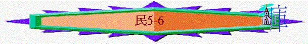

|
超越障礙、邁向豐盛（１－３６） |
|||||||||||||||||
|
預備起行 1-10:10 |
踏上征途10:11-14:45 |
曠野飄流 15-20:13 |
超越障礙 20:14-25:18 | 邁向豐盛 26-36 | |||||||||||||
|
組 織 |
生 活 |
基 礎 |
順 利 |
軟 弱 |
失 敗 |
教 育 |
叛 逆 |
定 例 |
管 教 |
環 境 |
軟 弱 |
咒 詛 |
引 誘 |
組 織 |
軍 令 |
回 顧 |
分 地 |
一.預備起行(在西乃曠野) 1-10:10
2.在地生活(5-6)
＊重點：
(1)前段是軍事上的組織，此段是生活上的規條；
(2)前段的吩咐對象是『男丁』，此段是『無論男女』
(3)很多「不潔淨」5:1『犯罪』5:6、『污穢』5:20、『清潔』5:28、『為聖』6:8等字眼
(4)中心經文(民5:3)
「無論男女都要使他們出到營外，免得污穢他們的營；這營是我所住的。」5:3
~重點真理『除罪為聖』
A.徹底對付罪污(5)
a.身體的不潔(v1-4)
(1)聖潔準則--非常嚴謹
「你吩咐以色列人，使一切長大痲瘋的，患漏症的，並因死屍不潔淨的，都出營外去。」5:2
〜沒一個是例外的，凡有以上不潔的情況都要出到營外。
(2)面對污穢--絕對遠離
「都出營外去」「免得污穢他們的營」
參考「親愛的弟兄啊，我們既有這等應許，就當潔淨自己，除去身體、靈魂一切的污穢，敬畏神，得以成聖。」林後7:1
〜即使是親人、領袖也沒有例外，絕對遠離
b.對人的虧負(V5-10)
(1)來到神前--坦白認罪
「他要承認所犯的罪，將所虧負人的，如數賠還，另外加上五分之一，也歸與所虧負的人。那人若沒有親屬可受所賠還的，那所賠還的就要歸與服事耶和華的祭司；至於那為他贖罪的公羊是在外。」5:7-8
〜「為他贖的公羊」代表犯罪的人要來到神面前，承認自己有罪，並且求神潔淨(藉祭)
(2)來到人前--額外抵償
「凡事都不可虧欠人，惟有彼此相愛要常以為虧欠；因為愛人的，就完全了律法。」羅13:8
〜若虧負人的，如數賠還，另外加上五分之一
c.配偶的不忠(疑恨)(V11-31)
(1)疑恨素祭--思念罪孽--神給人有回轉的機會
「你曉諭以色列人說：人的妻若有邪行，得罪他丈夫，有人與他行淫，事情嚴密，瞞過他丈夫，而且他被玷污，沒有作見證的人，當他行淫的時候也沒有被捉住，他丈夫生了疑恨的心，疑恨他，他是被玷污，或是他丈夫生了疑恨的心，疑恨他，他並沒有被玷污，這人就要將妻送到祭司那裡，又為他帶著大麥麵伊法十分之一作供物，不可澆上油，也不可加上乳香；因為這是疑恨的素祭，是思念的素祭，使人思念罪孽。」5:12-15
〜若丈夫懷疑妻子行淫，可以將妻子帶到神面前，並加上以下祭品
＊祭：來到神面前，不可空手朝見神
＊素祭：將生活所得的獻給神，是至聖的火祭
＊疑恨素祭：一般素祭，但沒加油及乳香，代表有瑕疵，可能有不馨香的情況(有人不潔)，人看見此祭，使他有機會想自己是否至聖，有否不馨香的表現。
(2)咒詛苦水--公義審判--神給人有公義的明証
「祭司要使那婦人近前來，站在耶和華面前。祭司要把聖水盛在瓦器裡，又從帳幕的地上取點塵土，放在水中。祭司要叫那婦人蓬頭散髮，站在耶和華面前，把思念的素祭，就是疑恨的素祭，放在他手中。祭司手裡拿著致咒詛的苦水，要叫婦人起誓，對他說：『若沒有人與你行淫，也未曾背著丈夫做污穢的事，你就免受這致咒詛苦水的災。你若背著丈夫行了污穢的事，在你丈夫以外有人與你行淫，（祭司叫婦人發咒起誓），願耶和華叫你大腿消瘦，肚腹發脹，使你在你民中被人咒詛，成了誓語；並且這致咒詛的水入你的腸中，要叫你的肚腹發脹，大腿消瘦。』婦人要回答說：『阿們，阿們。』
」5:16-22
「婚姻，人人都當尊重，床也不可污穢；因為苟合行淫的人，神必要審判。」來13:4
＊此苦水有咒詛成分，人若真有行淫，可令她肚腹發脹，大腿消散，換來是審判，但她若沒犯，則免受這災，也還她的清白。
B.甘心追求聖潔(6:1-21)
〜面對罪污，可消拯地遠離，但更即極的人，是選民可追求更分別為聖的拿細耳人生活。
a.甘心追求
「你曉諭以色列人說：無論男女許了特別的願，就是拿細耳人的願（拿細耳就是歸主的意思；下同），要離俗歸耶和華。」6:2
〜男女也可以的，是自發作拿細耳人，歸神為聖
b.遠離世俗
「他就要遠離清酒濃酒，也不可喝什麼清酒濃酒做的醋；不可喝什麼葡萄汁，也不可吃鮮葡萄和乾葡萄。在一切離俗的日子，凡葡萄樹上結的，自核至皮所做的物，都不可吃。」6:3-4
〜不能飲酒及吃關乎酒的東西(葡萄)，聖經常將世俗及酒放在一起，酒和世俗也是令人陶醉沉迷的事情。
c.特意歸神
「在他一切許願離俗的日子，不可用剃頭刀剃頭，要由髮綹長長了。他要聖潔，直到離俗歸耶和華的日子滿了。」6:5
「他的父母或是弟兄姊妹死了的時候，他不可因他們使自己不潔淨，因為那離俗歸神的憑據是在他頭上。」6:7
〜不剃頭，作為刻意離俗歸神的記號
d.嚴守聖潔
「在他離俗歸耶和華的一切日子，不可挨近死屍。他的父母或是弟兄姊妹死了的時候，他不可因他們使自己不潔淨，因為那離俗歸神的憑據是在他頭上。」6:6-7
「他要另選離俗歸耶和華的日子，又要牽一隻一歲的公羊羔來作贖愆祭；但先前的日子要歸徒然，因為他在離俗之間被玷污了。」6:12
〜不可挨近死屍，若偶然沾染，要重新由頭開始作拿細耳人，是對聖潔標準十分嚴謹！
e.蒙神悅納
「拿細耳人滿了離俗的日子乃有這條例：人要領他到會幕門口，他要將供物奉給耶和華，就是一隻沒有殘疾、一歲的公羊羔作燔祭，一隻沒有殘疾、一歲的母羊羔作贖罪祭，和一隻沒有殘疾的公綿羊作平安祭，」6:13-14
「拿細耳人要在會幕門口剃離俗的頭，把離俗頭上的髮放在平安祭下的火上。」6:18
〜當滿了離俗日子，人要來到神面前獻祭，可在會幕前剃頭，代表神已悅納他的心意，可將他的頭髮記號燒在神前。
C.憑信捉緊祝福(6:22-27)
a.起行者捉緊神的賜福
「他們要如此奉我的名為以色列人祝福；我也要賜福給他們。」6:27
〜有『賜福』、『保護』、『臉兒』、『賜恩』、『仰臉』、『平安』等字眼，代表人起行，除了要有個人追求聖潔外，也需要神的賜福。
b.祝福者捉緊神的應許
「他們要如此奉我的名為以色列人祝福；我也要賜福給他們。」6:27